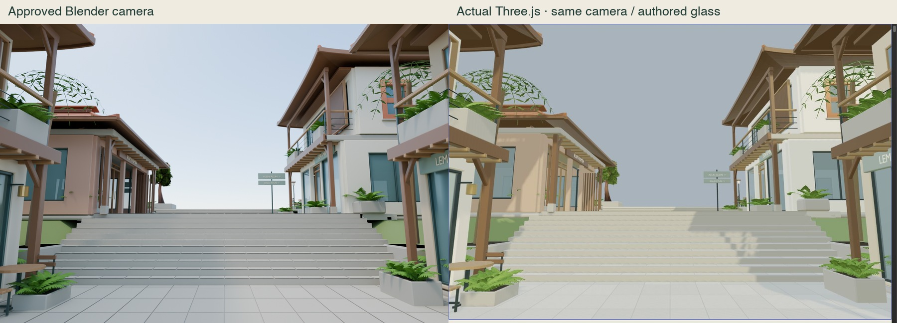
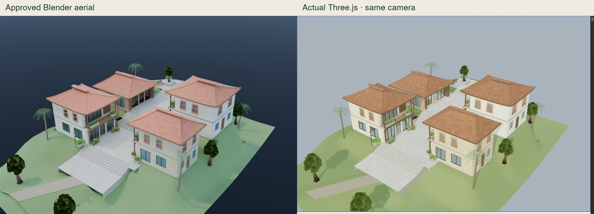
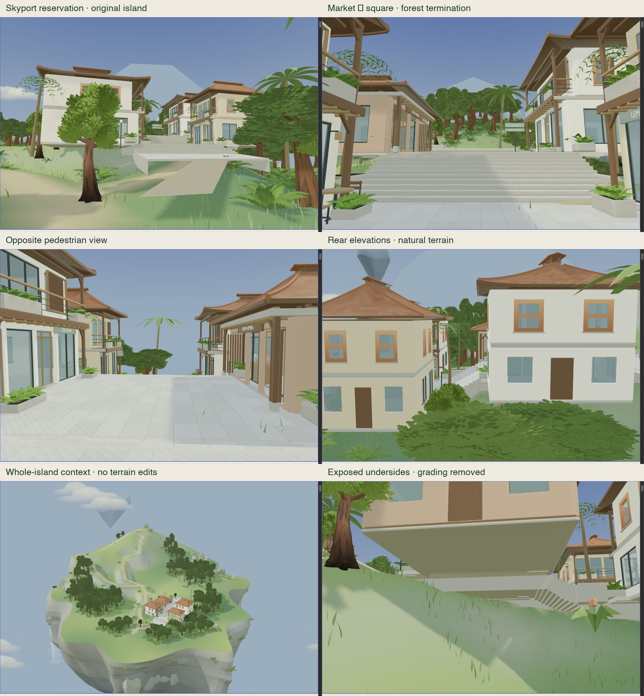
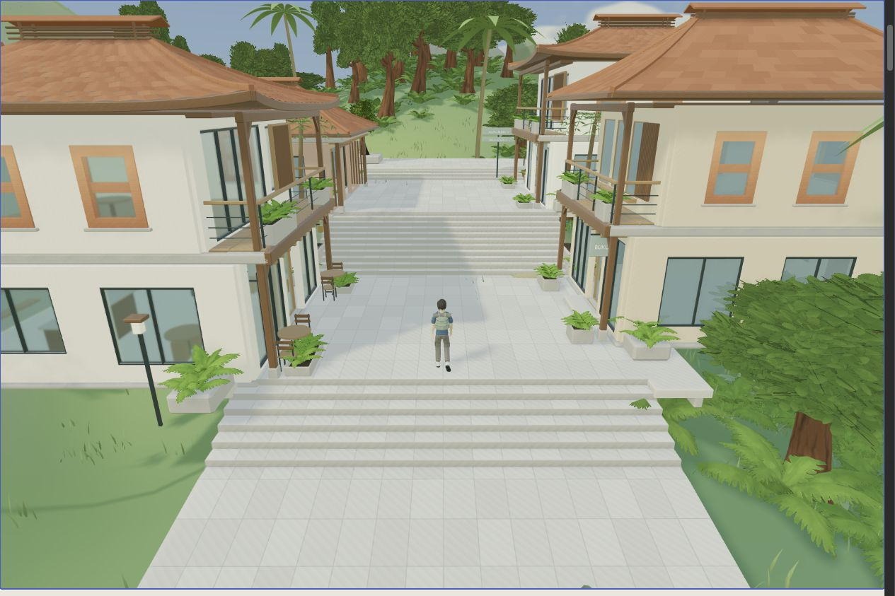
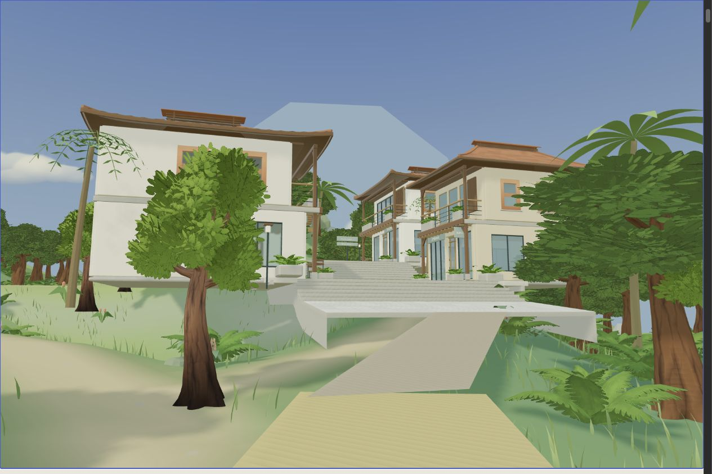
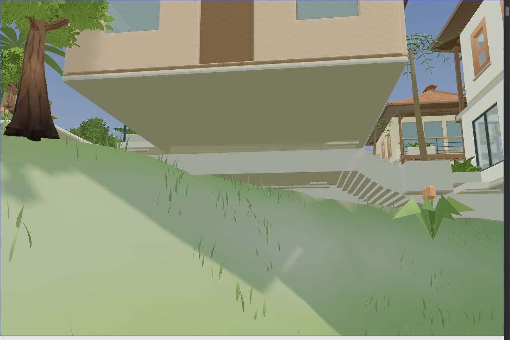
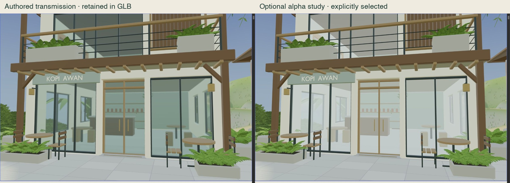

AR(N)AN Urban Atlas · independent technical review
Market Street in the browser
S2-D evidence is ready. The architecture transfers; the placement needs support and route repairs before deployment. Human visual approval remains pending.
Open isolated preview · Measurements and findings · Source rights · Editable Blender master · Optimized GLB
| Delivery | Measured result |
|---|
| GLB / geometry | 10,007,904 bytes · 170,709 triangles with instances · four buildings |
| Materials / textures | 37 GLB definitions · 59 runtime variants · five embedded images · none missing |
| Island walking, authored glass | 508–510 draws across all passes · 11.1 / 16.7 ms median / p95 frame intervals |
| Optional alpha glass study | 339–340 draws · 5.6 / 11.3 ms · not substituted in the GLB |
| Existing regressions / preservation | 43 passed · 1,353 protected files unchanged |
Matched cameras

Actual images, same lens and position. Browser GI, contact shadows and color response differ from Blender. Original Blender · Raw browser · Camera/settings

All four buildings, roofs and public-realm geometry remain. Original Blender · Raw browser
Unchanged island overlay

The Blender study's proposed grading is removed. Original terrain and vegetation remain. The real forest closes the market vista; shallow foundations do not reach natural ground.
Floor-to-ground support ranges: Kopi Awan 2.68–5.95 m; Lembaran 0.21–4.31 m; Rupa Rimba 0.57–7.38 m; Serambi 0.93–6.35 m. Measured terrain and coordinates · Aerial camera/settings.
Actual controller and connector proposal

The existing controller traverses the exported stairs. Actual maximum stair riser: 0.1743 m; controller snap limit: 0.42 m. This screenshot is from an actual proposed-deck-to-market traversal, not a posed character render.

Only a planning ribbon: 8.544 m, 3 m nominal width, 3.07% rise from future skyport Y=17.15. It reaches the existing garden path; downstream street uses stairs. No skyport building is implemented.
Exposed base at the west atelier. The 7.38 m floor/support discrepancy requires an approved structural/site response; the terrain has not been flattened.Raw arrival failure / stair pass · Square drop and blocked return · Jump · Proposed journey · Repeat foot/support trace · 5 mm centreline scan.
Explicit glass tradeoff

Same geometry, resolution, shadows and camera. The right image uses a clearly selected runtime material study; the delivered GLB retains the left material. Authored measurement · Alpha measurement. GPU timing and lower-power devices are not tested.
Three unresolved integration defects
- Structural support and edge treatment below buildings: up to 7.38 m below floor level.
- Arrival and square interfaces: raw arrival blocks, the square return blocks, and the upper apron has a 0.89 m drop. The connector is a feasible preview proposal; production still needs continuous collision decks and edge protection.
- Forest termination obscures the square/Guild direction; a readable destination vista remains to be authored in an approved later phase.
Stop at S2-D. No production deployment, terrain modification, new storefront, Guild, dragon or gameplay expansion was made.